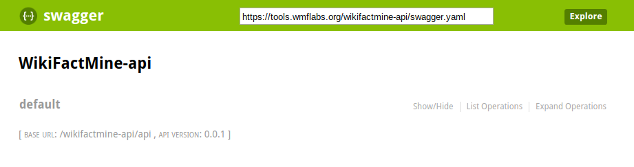

What is ContentMine?

What is WikiFactMine?
Supported by:
- WMF
- WMUK
- ContentMine
What is text mining?
What are we doing?
What does a WikiFactMine 'fact' look like?
| ContentMine ID | Wikidata Item | Paper | Prefix | Term | Postfix |
|---|---|---|---|---|---|
| CM.oncologydiseases3 | Q128581 | PMC5537693 | PDL1 has also been shown to be overexpressed in | breast cancer | cells, which underscores the significance of PDL1 as a target |
What are Dictionaries?
From topic areas like:
- Diseases
- Drugs
- Soil Types
- Many more...
fatameh
How can you get involved with WikiFactMine?
Build something with our API
